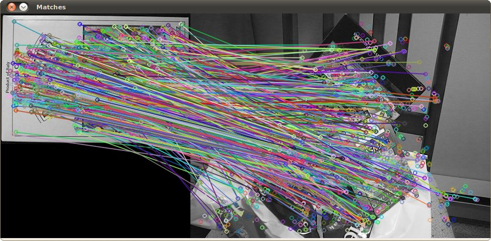

Feature Description
Goal
In this tutorial you will learn how to:
- Use the cv::DescriptorExtractor interface in order to find the feature vector correspondent to the keypoints. Specifically:
- Use cv::xfeatures2d::SURF and its function cv::xfeatures2d::SURF::compute to perform the required calculations.
- Use a cv::BFMatcher to match the features vector
- Use the function cv::drawMatches to draw the detected matches.
Theory
Code
This tutorial code’s is shown lines below.
#include <stdio.h> #include <iostream> #include "opencv2/core.hpp" #include "opencv2/features2d.hpp" #include "opencv2/highgui.hpp" #include "opencv2/xfeatures2d.hpp" using namespace cv; using namespace cv::xfeatures2d; void readme(); /* @function main */ int main( int argc, char** argv ) { if( argc != 3 ) { return -1; } Mat img_1 = imread( argv[1], IMREAD_GRAYSCALE ); Mat img_2 = imread( argv[2], IMREAD_GRAYSCALE ); if( !img_1.data || !img_2.data ) { return -1; } //-- Step 1: Detect the keypoints using SURF Detector, compute the descriptors int minHessian = 400; Ptr<SURF> detector = SURF::create(); detector->setHessianThreshold(minHessian); std::vector<KeyPoint> keypoints_1, keypoints_2; Mat descriptors_1, descriptors_2; detector->detectAndCompute( img_1, Mat(), keypoints_1, descriptors_1 ); detector->detectAndCompute( img_2, Mat(), keypoints_2, descriptors_2 ); //-- Step 2: Matching descriptor vectors with a brute force matcher BFMatcher matcher(NORM_L2); std::vector< DMatch > matches; matcher.match( descriptors_1, descriptors_2, matches ); //-- Draw matches Mat img_matches; drawMatches( img_1, keypoints_1, img_2, keypoints_2, matches, img_matches ); //-- Show detected matches imshow("Matches", img_matches ); waitKey(0); return 0; } /* @function readme */ void readme() { std::cout << " Usage: ./SURF_descriptor <img1> <img2>" << std::endl; }
Explanation
Result
Here is the result after applying the BruteForce matcher between the two original images:
